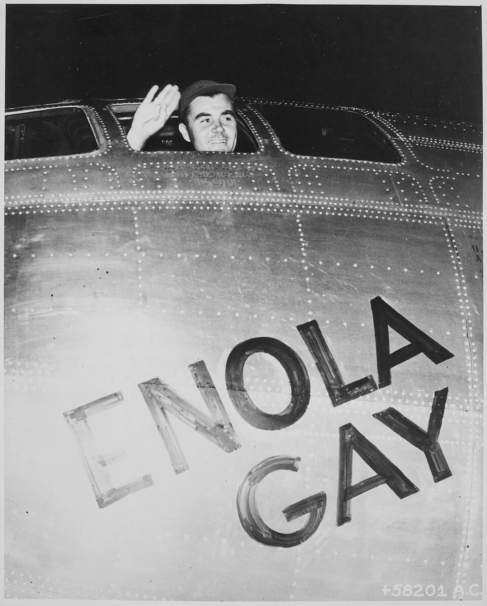
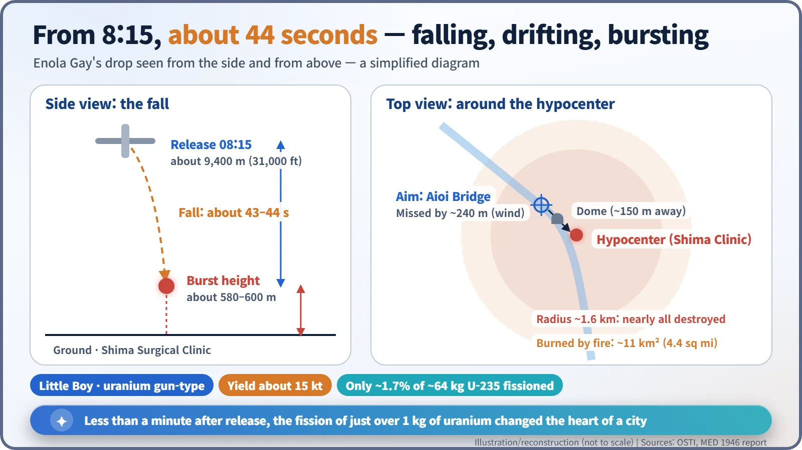
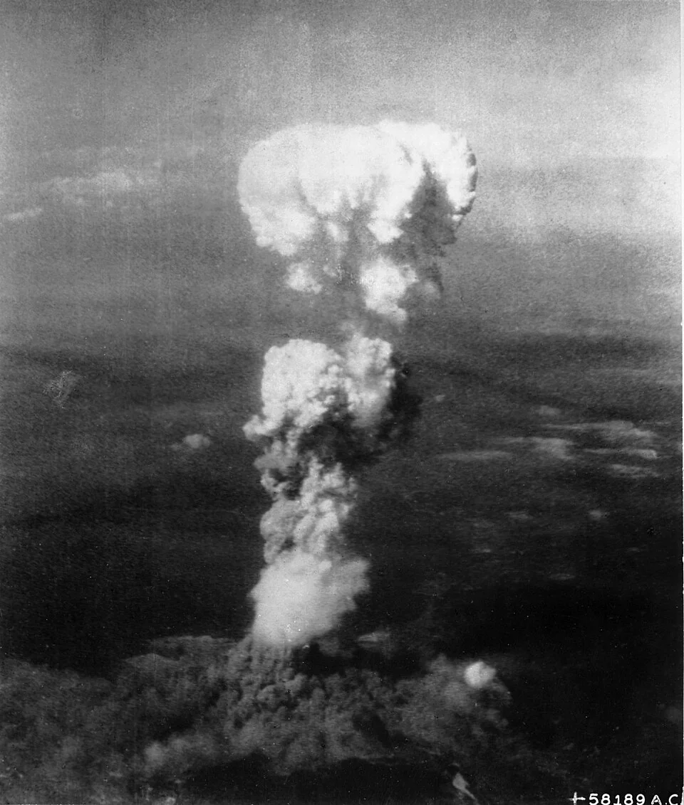
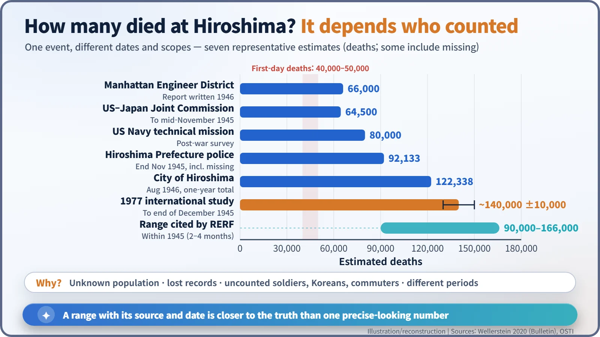
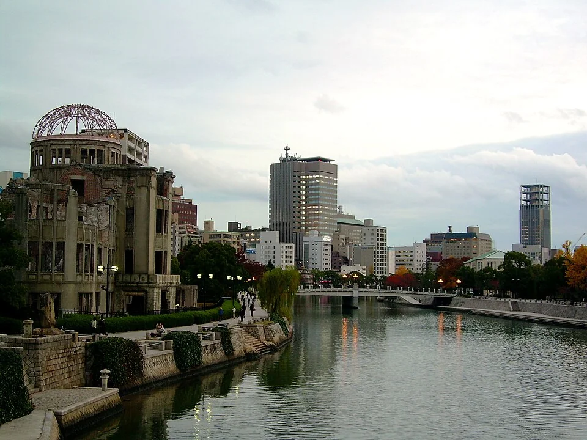

Nuclear History · 119
"Cloud Cover Less Than 3/10th — Bomb Primary": Hiroshima, 8:15 a.m., August 6, 1945
A weather report chose the target; 43 seconds later a city centre was gone, and the death toll is still counted as a range.
At 8:15 a.m. on 6 August 1945 the B-29 Enola Gay dropped a uranium bomb, Little Boy, on Hiroshima. It burst about 580–600 m above the city with a yield of about 15 kilotons. How many people died is still given as a range, from about 66,000 to about 140,000 by the end of 1945 depending on who counted, when and whom.
One line of weather report
On the morning of 6 August 1945 a B-29 flying over Japan radioed a short message: "Cloud cover less than 3/10th at all altitudes. Advice: bomb primary." The sender was a weather-reconnaissance plane, Straight Flush. The receiver was the Enola Gay, carrying an atomic bomb. One line of weather report settled the day's target: Hiroshima. [4]
Why Hiroshima?
Hiroshima was a military city and port, home to the headquarters of the Japanese Army's Second General Army. One of the American criteria for choosing a target was a city "relatively untouched by previous bombing", so that the effect of the new weapon could be seen clearly. Hiroshima had so far been spared large-scale air raids, and it stood at the top of the target list. [2]
2:45 a.m. on Tinian
The Enola Gay took off from North Field on the island of Tinian at 2:45 a.m. local time (1:45 a.m. in Japan). At the controls was Colonel Paul W. Tibbets Jr. (1915–2007), commander of the 509th Composite Group. The weapons officer, Navy Captain William S. Parsons, armed the bomb in flight, so that a crash on takeoff would not set off a nuclear explosion. He had earlier watched four B-29s crash and burn on takeoff. Instrument and camera planes flew alongside. [1] [4]

In Hiroshima an air-raid alert sounded at 7:09 a.m. as the weather plane approached, and was lifted at 7:31 because only a handful of aircraft were in sight. Sources differ slightly on the exact all-clear time. [2] [4]
Forty-three seconds and 240 metres
At 8:15 a.m. the bombardier released the bomb from about 9,400 m (31,000 ft). It was Little Boy, a uranium gun-type weapon weighing about 4.4 tonnes (9,700 lb). A gun-type bomb fires one piece of uranium into another, like a bullet, to start a chain reaction in an instant. The bomb fell for about 43 seconds (44.4 s in some calculations) and exploded roughly 580–600 m above the ground.
The aiming point was the T-shaped Aioi Bridge, easy to recognise from the air. A crosswind pushed the bomb about 240 m off target, and it burst above the Shima Surgical Clinic. The yield is estimated at about 15 kilotons, the energy of 15,000 tonnes of TNT. Remarkably, of the roughly 64 kg of uranium-235 on board, only about 1.7 percent, just over a kilogram, actually fissioned. [1] [4]

Nearly every building within about 1.6 km (one mile) of ground zero was destroyed, and almost every building within three miles was damaged. A firestorm then burned about 11 km² (4.4 square miles). The 1946 Manhattan Engineer District report counted over 60,000 of some 90,000 buildings destroyed or severely damaged. Tibbets later recalled: "The city was hidden by that awful cloud . . . boiling up, mushrooming, terrible and incredibly tall." [1] [2]

Why the numbers never agree
How many people died? There is no single answer. The U.S. Department of Energy's history (OSTI) gives about 70,000 killed outright and more than 100,000 by the end of 1945. The 1946 Manhattan Engineer District report gave 66,000 dead. A 1977 international study estimated about 140,000 (±10,000) by the end of December 1945, the figure the Hiroshima Peace Memorial Museum uses. The range cited by the Radiation Effects Research Foundation (RERF) is 90,000 to 166,000. [1] [3]

The historian of science Alex Wellerstein sums up why the figures diverge. Nobody knew the city's exact population before the raid. Records burned, and bodies were cremated in the open. Soldiers, conscripted Korean labourers and commuters from elsewhere were often left out of early counts. And the counting periods differ: the first day, a few months, a year. As he puts it, "The high degree of apparent precision in these numbers is fairly misleading." [3]
Estimates of Korean deaths vary especially widely. The memorial to Korean victims in the Peace Memorial Park speaks of "more than 20,000". In 1972 the Korea Atomic Bomb Victim Association estimated some 30,000 dead in Hiroshima, while a 1979 volume compiled by the cities of Hiroshima and Nagasaki gave 5,000 to 8,000. The museum displays no figure, saying no estimate rests on solid grounds. Sources also differ on the American prisoners of war held in the city who were killed: from about a dozen to about twenty. [1] [7]
One dome left standing
About 150 m from the hypocenter stood the Hiroshima Prefectural Industrial Promotion Hall, designed by the Czech architect Jan Letzel and completed in 1915. Its walls and the steel frame of its dome survived. Known today as the Atomic Bomb Dome, it was inscribed on the UNESCO World Heritage List in December 1996. At the time the United States distanced itself from the decision, arguing that a war site needed wider historical context, and China also voiced concern. The same ruin is remembered differently in different countries. [5]

What the morning leaves behind
Sixteen hours after the bombing, President Truman announced the new weapon. Three days later a second bomb fell on Nagasaki. The survivors would become, over decades, the most important source of knowledge on how radiation affects the human body. Whether the bombing was necessary, and what ultimately brought about Japan's surrender, are questions historians still answer differently, and they deserve a story of their own. What this one records is the morning itself, and numbers that refuse to converge, which in their own way measure the scale of the loss. [1]